Setting time of cement paste, mortar or concrete will have a influence on handling of cement or concrete. The setting time is divided into two parts, i.e., initial setting time and final setting time. Initial setting time is the time elapsed between the moments that the water is added to the cement, to the time that the paste starts losing its plasticity. The final setting time is the time elapsed between the moment water is added to the cement and the time when the paste has completely lost its plasticity and has attained sufficient firmness to resist certain definite pressure.
It is important to know the setting time of cement paste, mortar or concrete in a actual constructions because the process of mixing, transporting, placing, compacting, finishing requires certain time. During this time the cement paste, mortar or concrete should be in plastic condition. The time interval for which the cement products remain in plastic condition is known as the initial setting time. Normally a minimum of 30 minutes is given for mixing and handling operations. The constituents and fineness of cement is maintained in such a way that the concrete remains in plastic condition for certain minimum time. Once the concrete is placed in the final position, compacted and finished, then it should lose its plasticity in the earliest possible time so that it is least vulnerable to damages from external agencies.
Specification of Vicat Apparatus used for setting time test
Source:http://civilblog.org/2014/08/01/how-to-determination-of-standard-consistency-of-cement-paste/
Setting time for different types of cements:
Source:http://civilblog.org/2013/05/04/initial-final-setting-time-is-4031-part-5-1988/
Relevant Indian Standard: Initial & Final Setting Time (IS:4031-PART 5-1988).
Objective:
To determine the initial setting time of given cement sample.
Steps:
- Open Initial setting time of cement experiment, Click on NEXT Button at the bottom right corner to proceed further.
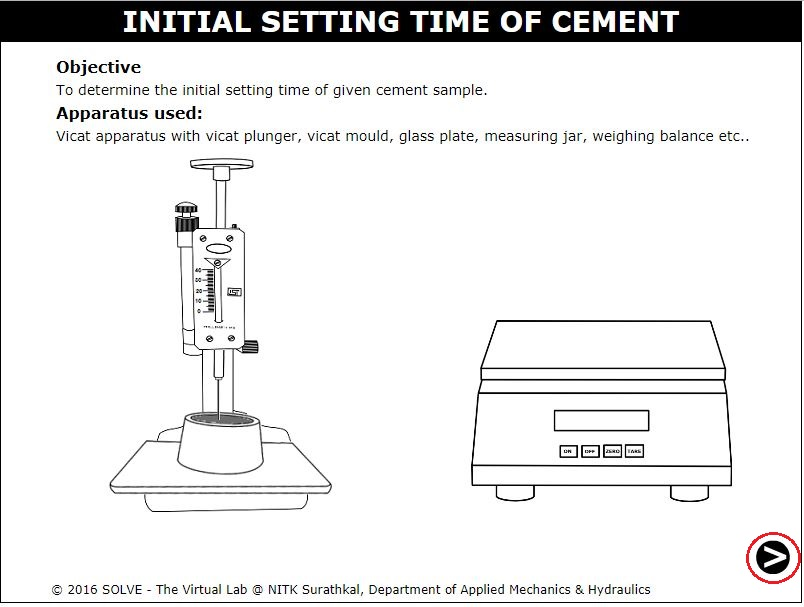 - Click on ON button and place the tray on the weighing balance.
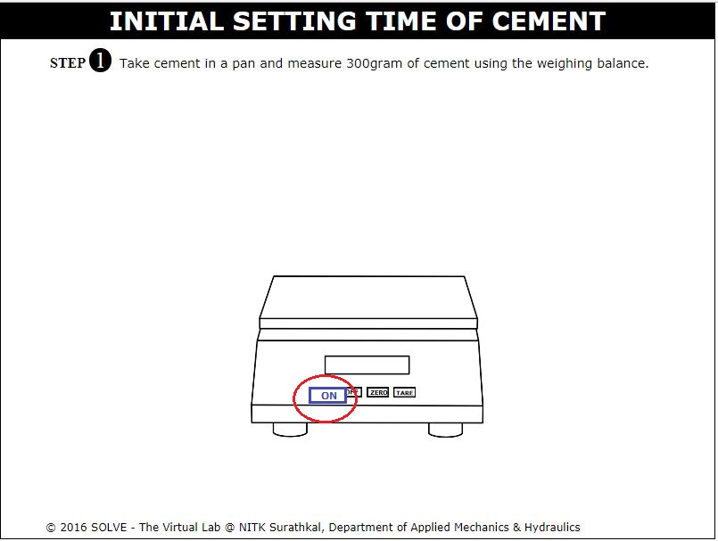 - Now click on the tray to place it in the weighing machine, then click TARE.
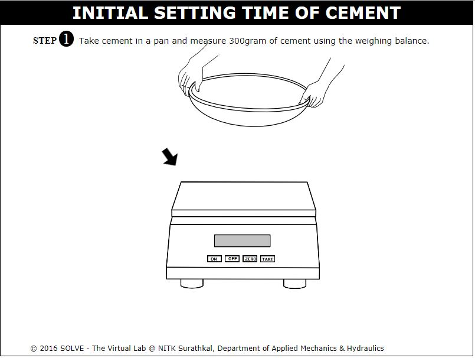 - Click on tray with cement sample to weigh 300g of cement then click NEXT button.
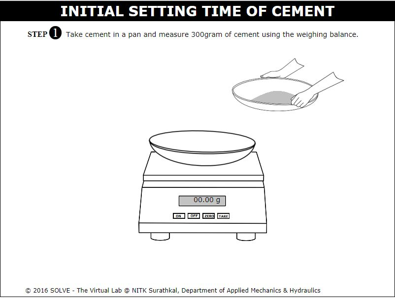 - Now click on beaker to measure the required quantity of water, and then click on measuring jar to pour water into the tray.
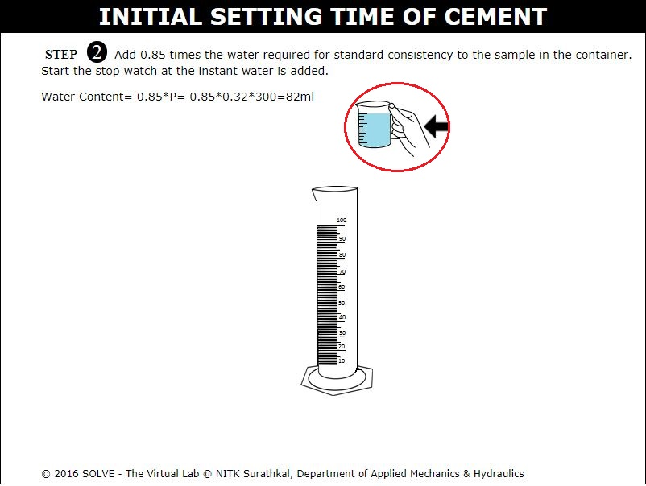 - Click on trowel to mix it well then move to next step by clicking NEXT button.
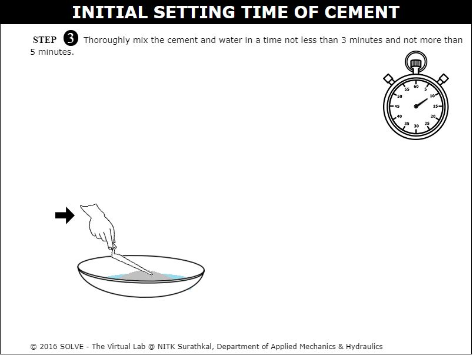 - Again click on trowel to fill the cement paste into the mould.
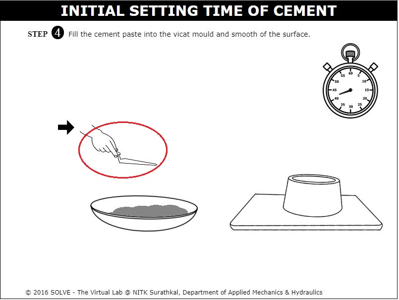 - Click on Vicat mould to place it in the Vicat apparatus.
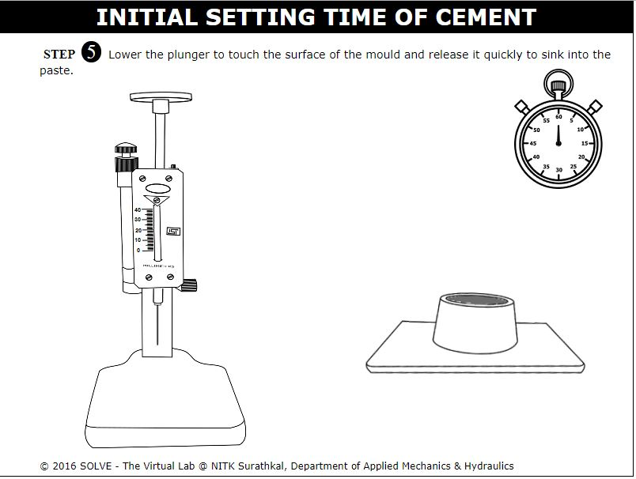 - Now click on the knob to adjust the plunger to the top level of mould. Here the initial reading will be obtained.
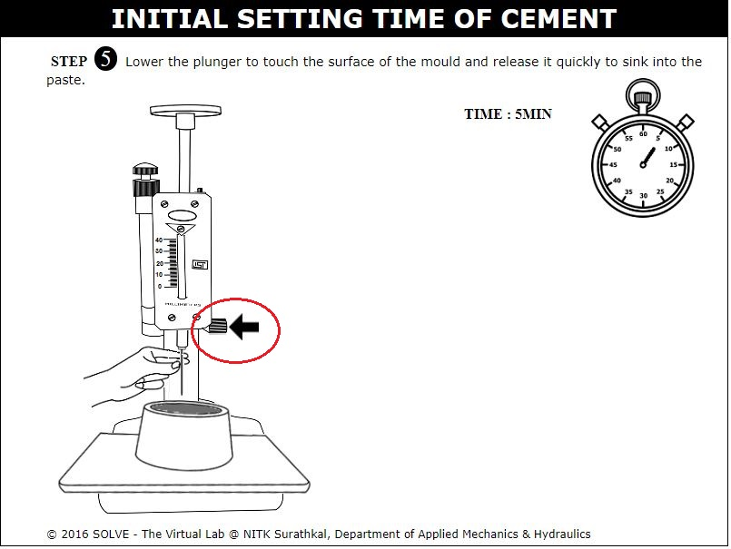 - Click the top knob to release the plunger and note the final reading, then click on NEXT button to view the observations.
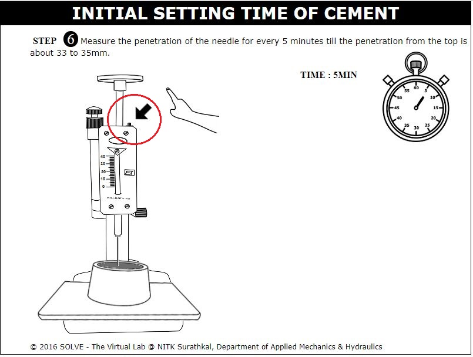 - Repeat the trial for every 5 minutes difference till the initial setting time is obtained.
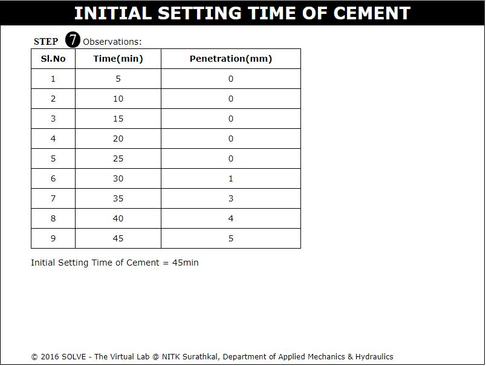

- What is the initial setting time of ready mixed concretes?
- What are the precautions taken in the RMC plant to avoid concrete from setting during transportations?


IS:4031(PART 5) 1988: Methods of Physical Tests for hydraulic Cement, Part 5 Determination of Initial and Final Setting Times, Edition 2.1, 2001.
B. C. Punmia, Ashok Kumar Jain, Soil Mechanics and Foundations, Laxmi Publications,2005.
M.S. Shetty, Concrete Technology, S. Chand publications, 2009.
M.L. Gambhir, Concrete Technology, Tata McGraw-Hill Education, 2004.